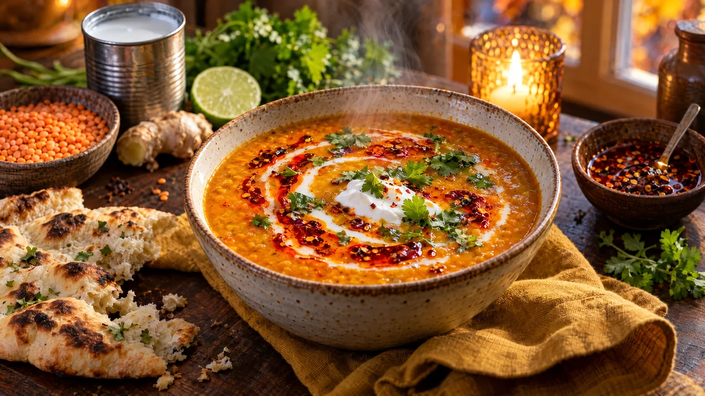

RESTFEST · RECEPTSoppa · Huvudrätt
Krämig röd linssoppa med kokos och chiliolja
Röda linser, en burk krossade tomater och en burk kokosmjölk kokas till en sammetslen, solgul soppa med spiskummin och ingefära. Den toppas med glödande röd chiliolja, en virvel kokosmjölk och färsk koriander. Värmande, mättande och klar på en halvtimme.
- Förberedelse
- 10 min
- Tillagning
- 25 min
- Portioner
- 4
- Nivå
- Nybörjare
 Det här behöver du
Det här behöver du
JÄMFÖRT MED DIN KYL
Tryck på + vid det du behöver köpa.
Soppa
Chiliolja
Till servering
Gör så här
- Hacka löken och riv vitlök och ingefära. Skölj linserna i en sil under kallt vatten.
- Fräs löken i oljan i en stor kastrull på medelvärme i 4 minuter, tills den är mjuk.
- Tillsätt vitlök, ingefära, spiskummin, gurkmeja och paprikapulver och fräs i 1 minut.
- Häll i linser, krossade tomater, vatten och buljongtärning. Spara 3 msk av kokosmjölken till garnering och häll i resten.
- Koka upp och låt sjuda under lock i 15–20 minuter. Rör då och då, tills linserna är helt sönderkokta.
- Mixa soppan slät med en stavmixer. Späd med lite vatten om den är för tjock. Smaka av med limesaft och salt.
- Gör chilioljan: värm oljan försiktigt i en liten kastrull i 1 minut. Ta av från värmen och rör ner chiliflakes och paprikapulver. Paprikapulver bränns lätt, så låt inte kastrullen stå kvar på plattan.
Dekoration och servering
- Häll upp soppan i djupa skålar och droppa kokosmjölken i en virvel på ytan.
- Ringla chilioljan över i tunna, glödande röda trådar och strö över koriander.
- Lägg en klick havreyoghurt mitt i, om du vill.
- Servera med varmt naanbröd.
- Soppan blir ännu godare dagen efter och går bra att frysa i portioner.
Mått och ugnstemperaturer
Måtten är svenska (dl, msk, tsk, krm). Ugnstemperaturerna gäller vanlig ugn med över- och undervärme; med varmluft, sänk med 20 grader.